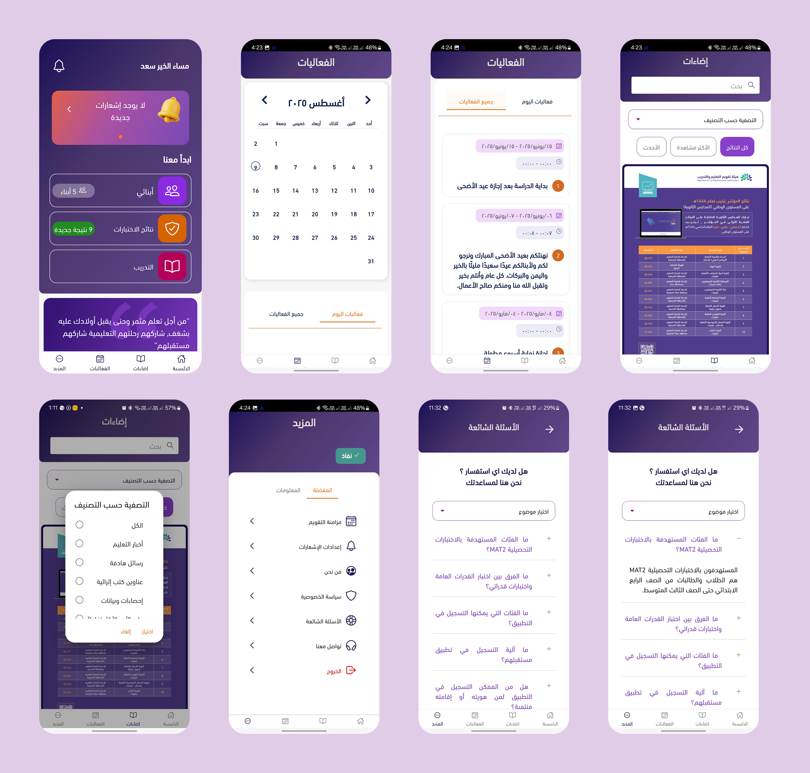
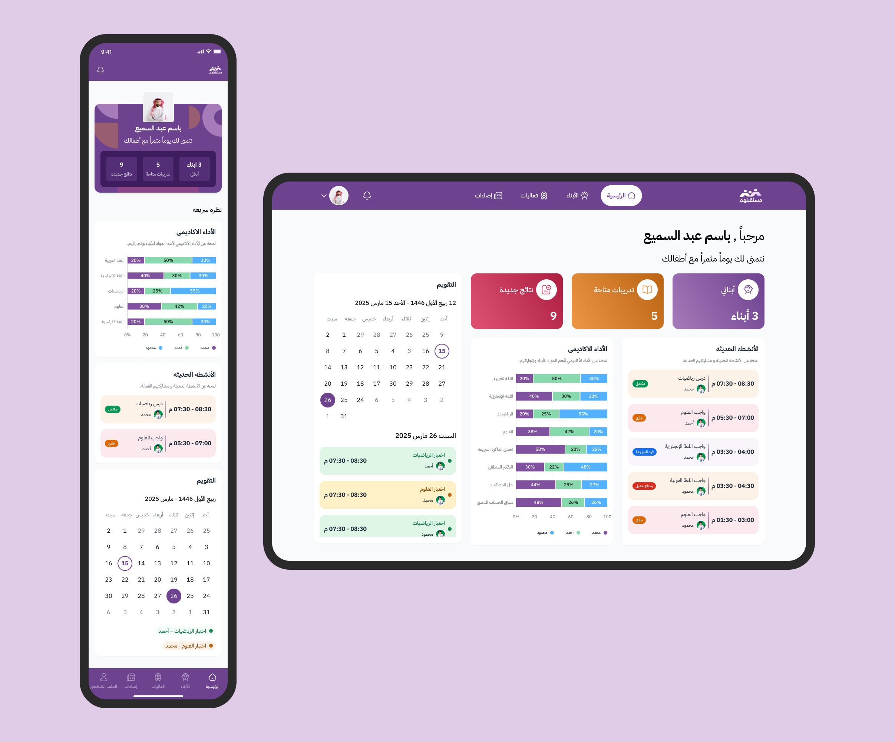
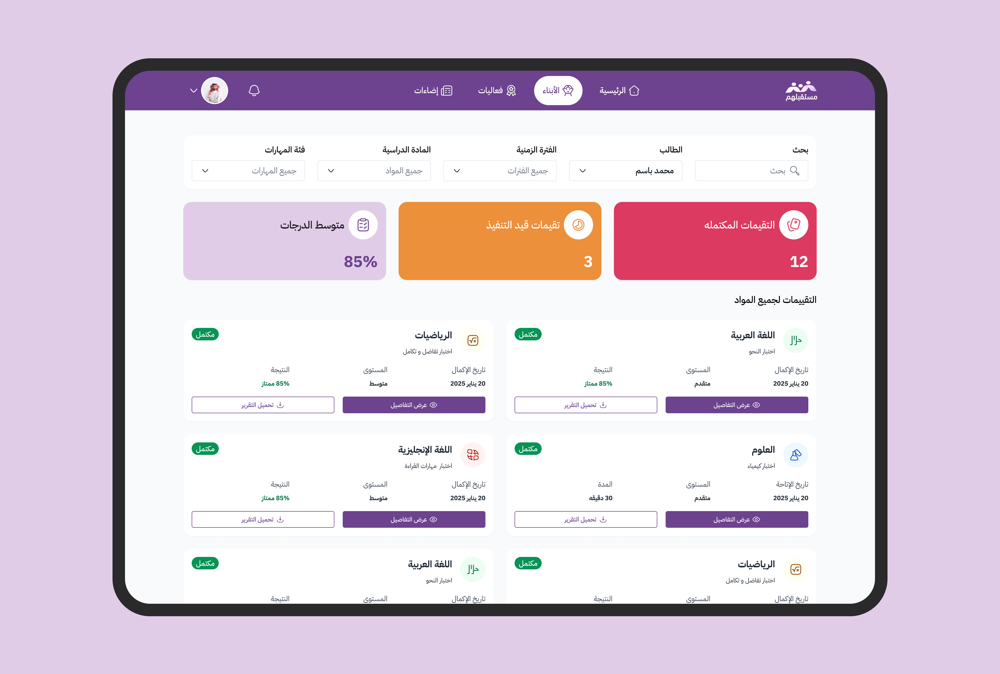
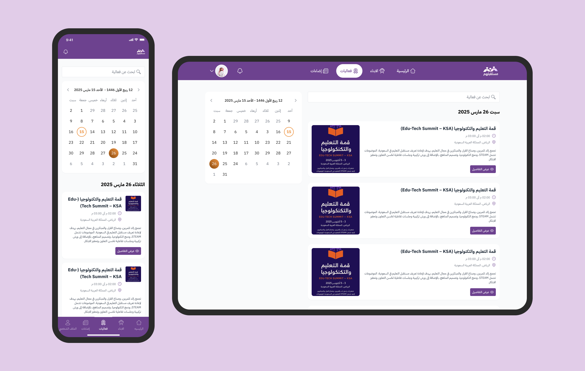
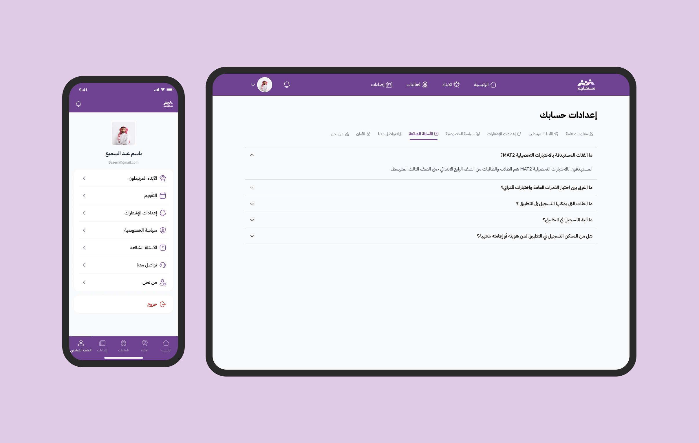
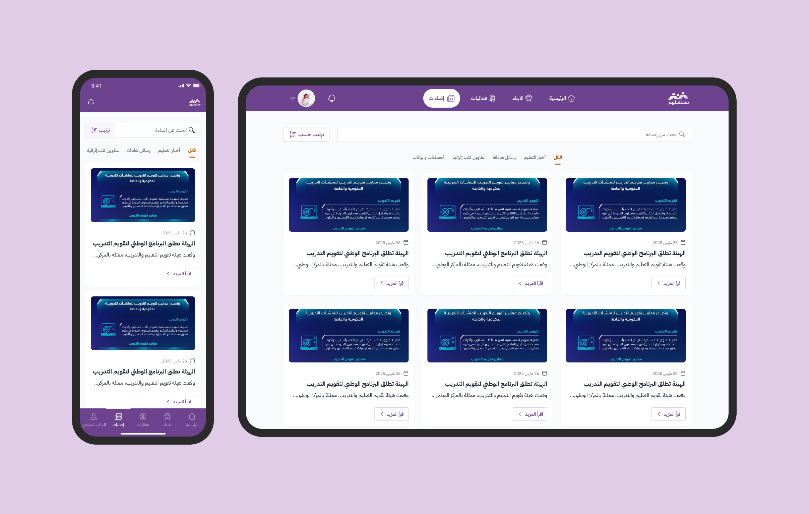

Mustaqbalhum App Redesign
5-day rapid UX audit and redesign empowering parents to track student evaluations under Saudi Design Standards.

Project Overview
“Mustaqbalhum” is an initiative by the Education & Training Evaluation Commission (ETEC) in Saudi Arabia, designed to empower parents to track their children’s academic performance, understand strengths and weaknesses, and support their educational journey through continuous assessments.
Race Against Time
The primary challenge was to deliver a complete redesign of the existing app within an extremely tight timeframe of less than 5 days for a competition organized by ETEC. Despite the strict deadline, the main goal was to craft a modern, user-friendly experience fully aligned with the Saudi Unified Design System.
What We Discovered
A comprehensive UX audit of the existing app revealed several critical usability issues. The information structure was unclear, making it difficult for parents to quickly access their children’s evaluations, while the homepage lacked a meaningful summary of overall academic performance. Additionally, visual inconsistencies across colors, icons, and typography weakened the overall user experience, and key views such as a dedicated child profile for tracking subjects and skills separately were entirely missing.
Shaping the New Experience
Within a 5-day timeline, I restructured the app to feature dedicated child profiles, visual performance summaries, and clean filtering, all built in strict alignment with the Saudi Unified Design System. The result was a modern, RTL-friendly experience that simplified tracking progress for parents and was successfully submitted for the ETEC competition.

Old Journey

Redesigned Journey







Key Takeaways
This project was a huge learning experience for me. It helped me work much closer with business teams and stakeholders to make sure our designs actually solved real business needs.
The project helped me improve my time management skills and strengthened my experience in designing and writing for Arabic interfaces.